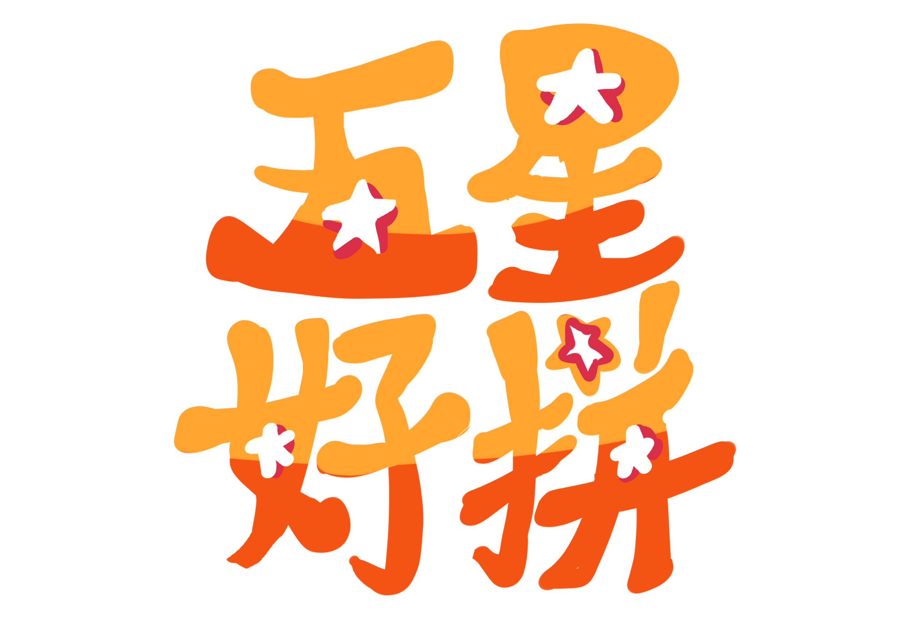
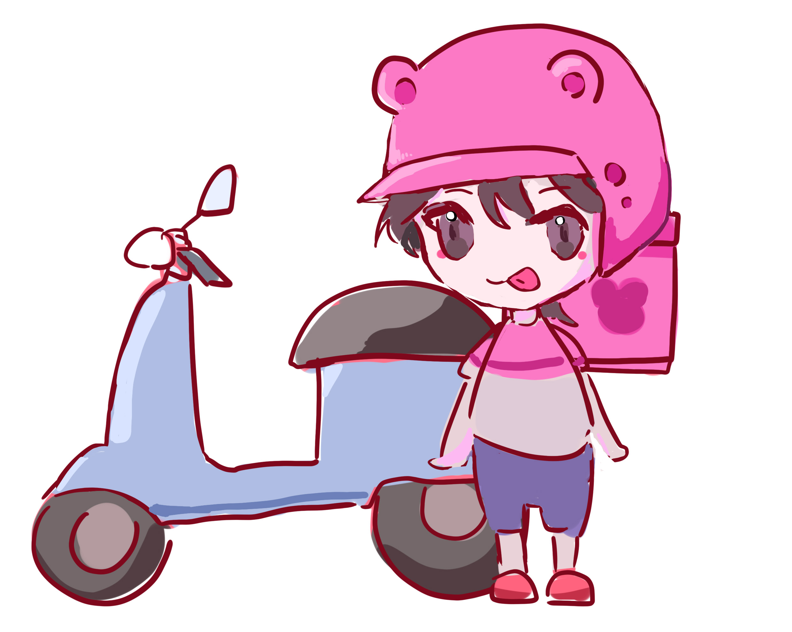
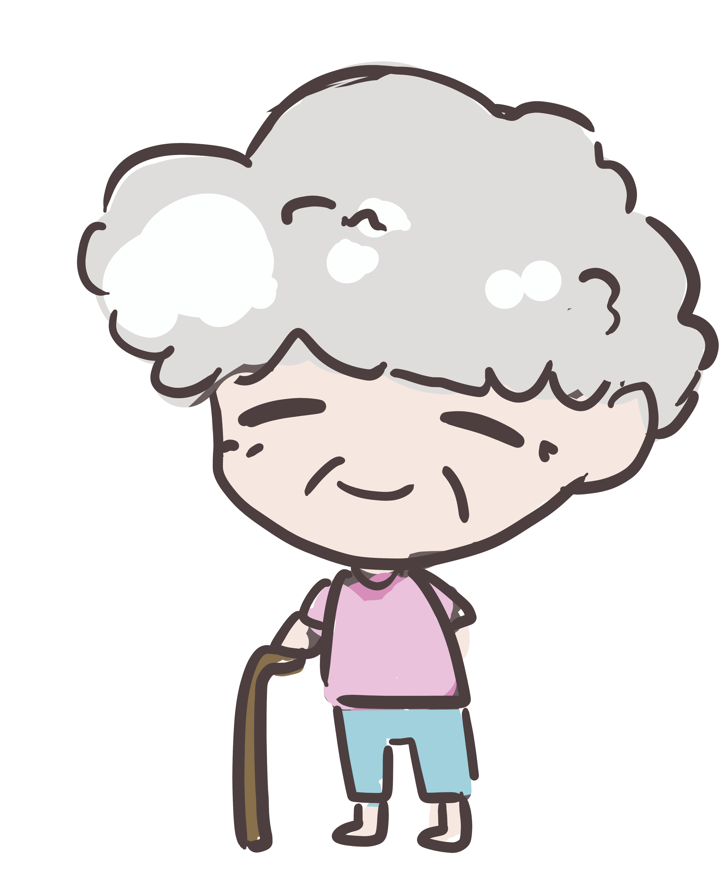
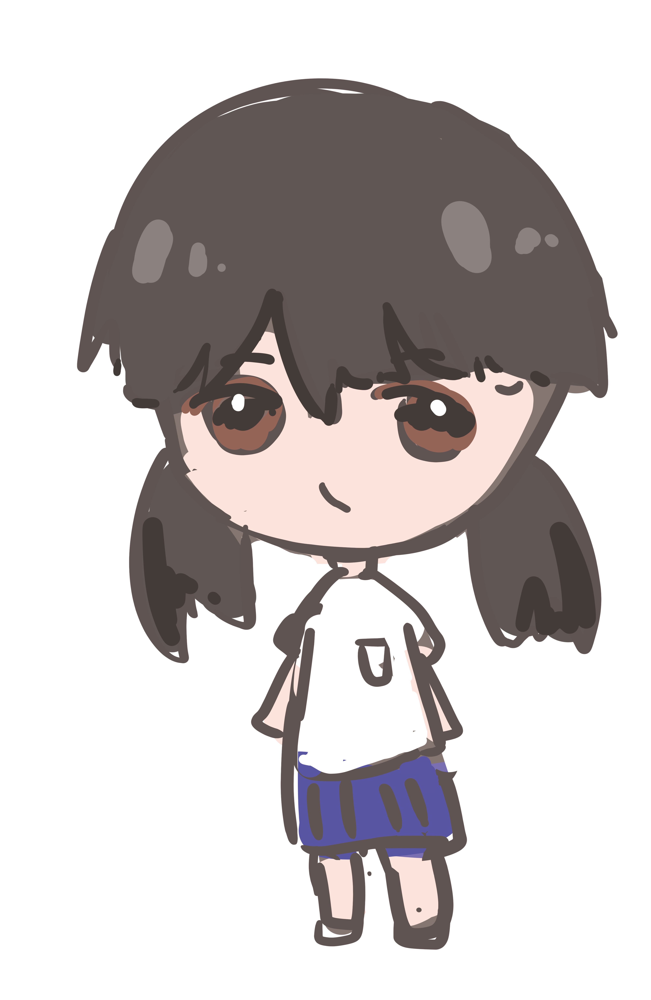
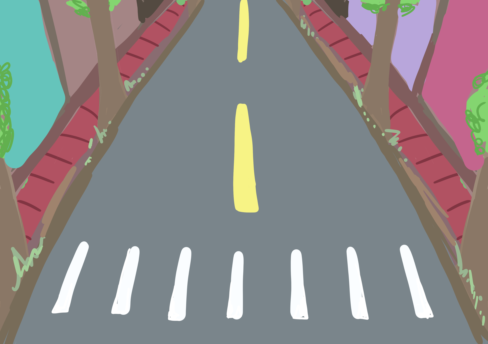
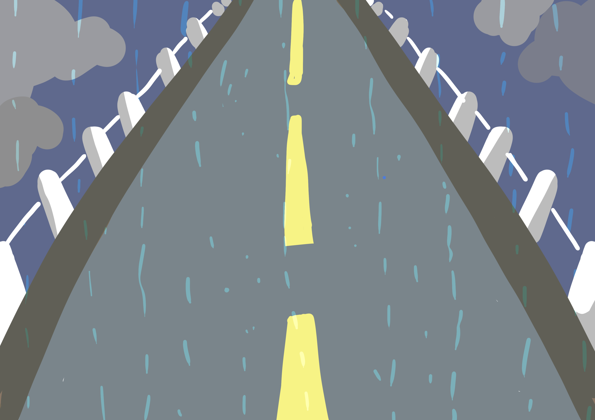
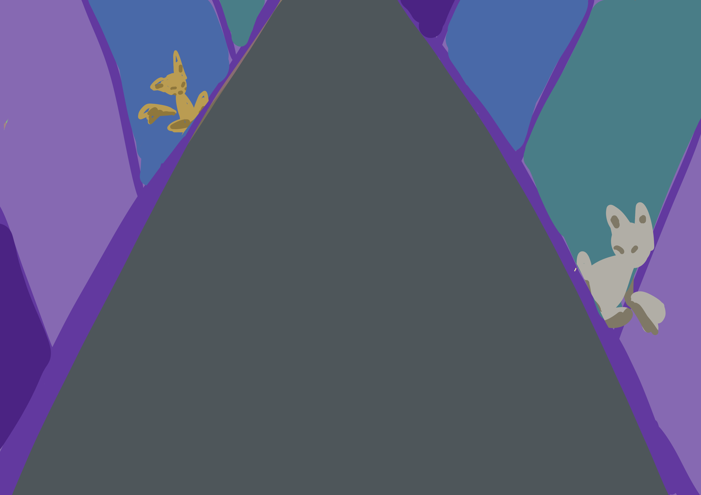

1411322031施采穎
| 故事背景 | 遊戲大綱 | 遊戲介紹 | 角色介紹 | 道具介紹 |
地圖介紹 |
在一個外送平台稱霸的世代裡，每位外送員都有一個共同的夢想，
就是拿到傳說中的「五星評價」！
你，就是這座城市裡最拚命、最快速的外送員，每天揹著保溫袋，騎著老舊小機車，穿梭在車水馬龍的大街小巷。
但這裡的道路，絕不是一般人能輕鬆通過：
有時會遇到塞滿整條街的車陣、地上隨時出現的香蕉皮，
還會被「碰瓷大叔」和「突如其來的醉漢」搞到滿頭包。
更慘的是，顧客永遠只在乎一件事——
「我的餐點多久到！」
為了顧客的笑容、為了傳說的五星評價，
你只能一路狂飆、一路閃避，拼命把餐點準時送到！
在這座混亂又爆笑的城市裡，外送不只是工作，而是一場跑酷生死戰！
玩家化身為一名外送員，在城市馬路與巷弄裡狂飆，閃避交通與意外的同時確保餐點完整，拼命在時間內把餐點送到顧客手上，
只為獲得五星好評。
-名稱：五星好拼
-遊戲類型：跑酷、休閒、限時
-主要受眾：10~35歲包含大學生、上班族
-遊戲特色：實境搞笑風、日常共鳴
-操作方式：
左右滑動 → 變換車道，閃避汽車 /
行人
長按 → 衝刺，有體力限制
點擊 → 跳躍，跨越水溝蓋陷阱、吃完的香蕉皮
分數來源→跑的距離
+ 收集餐點數量
Combo →連續收集餐點進入「爆單模式」，分數加倍
-遊戲結局：
1.成功送完餐點，獲得五星好評
2.撞到障礙物三次或保溫袋裡的食物全翻出來 →
遭顧客投訴，遊戲結束
外送員騎著機車加上保溫袋

顧客:上班族、 老人、 學生


超大雞排：回復體力
珍珠奶茶：短時間加速
安全帽加倍大：擋一次撞擊
保溫袋戶盾：讓背後的餐點不會掉出來（限時保護1次）
-陷阱種類：
水溝蓋洞：跳躍躲避
香蕉皮：跳躍躲避
道路施工號誌：需要左右躲避
突然開門的計程車：需要左右躲避
碰瓷的行人：需要左右躲避
白天市區大道：塞滿汽車、腳踏車、行人。

雨天公路：路面濕滑、飛濺水花、大卡車逼近。

深夜小巷：昏暗路燈、流浪狗、突然出現的喝醉阿伯與怪人。
